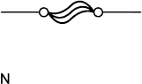
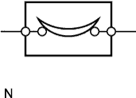
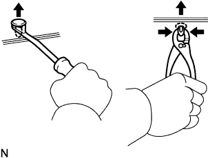
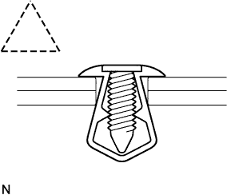
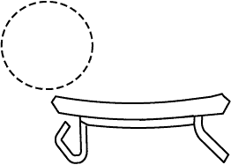
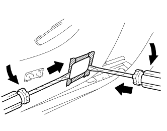

УКАЗАНИЯ ПО ВЫПОЛНЕНИЮ РЕМОНТА > МЕРЫ ПРЕДОСТОРОЖНОСТИ |
| 1.ОСНОВНЫЕ УКАЗАНИЯ ПО ВЫПОЛНЕНИЮ РЕМОНТА |
УКАЗАНИЯ ПО ВЫПОЛНЕНИЮ РАБОТ

| 1 | Одежда |
|
| 2 | Защита автомобиля | Перед началом работ подготовьте защитные покрытия на крылья, сиденья и решетку радиатора, а также напольные коврики. |
| 3 | Безопасное выполнение работ |
|
| 4 | Подготовка инструмента и измерительных приборов | Перед началом работ подготовьте стеллаж для инструментов, SST, измерительные приборы, масло и запасные части. |
| 5 | Снятие и установка, разборка и сборка |
|
| 6 | Снятые детали |
|
| 7* | Проверки, которые должны быть выполнены после завершения работ |
|
ПОДДОМКРАЧИВАНИЕ И УСТАНОВКА АВТОМОБИЛЯ НА ОПОРЫ
При поддомкрачивании и установке автомобиля на опоры соблюдайте осторожность. Автомобиль можно поднимать и устанавливать на опоры, устанавливая домкрат или опоры только в указанных точках.
ДЕТАЛИ С ПРЕДВАРИТЕЛЬНО НАНЕСЕННЫМ ПОКРЫТИЕМ
| *a | Герметик-фиксатор |
Детали с предварительно нанесенным покрытием - это болты и гайки, на которые на заводе наносится фиксатор резьбы.
При затяжке, ослаблении или другом перемещении детали с предварительно нанесенным покрытием ее следует заново покрыть предписанным фиксатором.
При повторном использовании детали с предварительно нанесенным покрытием старое покрытие следует удалить и просушить деталь сжатым воздухом. Затем необходимо нанести новый фиксатор резьбы, соответствующий этой детали.
Некоторые фиксаторы затвердевают медленно. Может потребоваться подождать, пока фиксатор резьбы затвердеет.
ПРОКЛАДКИ
При необходимости нанесите на прокладки герметик для предотвращения утечек.
БОЛТЫ, ГАЙКИ И ВИНТЫ
Следуйте всем спецификациям по моментам затяжки. Всегда используйте динамометрический ключ.
ПРЕДОХРАНИТЕЛИ
При контроле предохранителя проверьте, не разорван ли его провод.
Если провод предохранителя разорван, убедитесь, что в его цепи нет коротких замыканий.
При замене предохранителя следует использовать предохранитель с таким же номинальным током.
| Иллюстрация | Схематическое обозначение | Наименование детали | Сокращение |
 |  | ПРЕДОХРАНИТЕЛЬ | FUSE |
 |  | СРЕДНЕАМПЕРНЫЙ ПРЕДОХРАНИТЕЛЬ | M-FUSE |
|  | ВЫСОКОАМПЕРНЫЙ ПРЕДОХРАНИТЕЛЬ | H-FUSE | |
 |  | ПЛАВКИЙ ПРЕДОХРАНИТЕЛЬ | FL |
 |  | РАЗМЫКАТЕЛЬ ЦЕПИ | CB |
ФИКСАТОРЫ
Методы установки и снятия типичных фиксаторов, используемых для крепления деталей кузова автомобиля, представлены в следующей таблице.
| Вид (пример) | Иллюстрация | Порядок выполнения работ |
|  | Снимите фиксаторы с помощью инструмента для снятия фиксаторов или плоскогубцев. | |
 |  | Снимите фиксаторы с помощью инструмента для снятия фиксаторов или отвертки. |
 | Снимите фиксаторы с помощью широкого скребка, чтобы не повредить панель. | |
 |  | Снимите фиксаторы, протолкнув центральный штырь и вытащив оболочку. |
|  |  | Снимите фиксаторы, вывинтив центральный штырь и вытащив оболочку. |
| Снимите фиксаторы, вытащив вначале штырь, а затем оболочку. |
ЗАХВАТЫ
Методы установки и снятия типичных захватов, используемых для крепления деталей кузова автомобиля, представлены в следующей таблице.
| Вид (пример) | Иллюстрация | Порядок выполнения работ |
|  |  | С помощью отвертки освободите захваты и снимите крышки или панели. |
|  | С помощью отвертки освободите захваты и снимите крышки или панели. | |
 | С помощью отвертки освободите захваты и снимите крышки или панели. |
ПЕТЛЯ, НАПРАВЛЯЮЩАЯ, ЗАЖИМ, ШТИФТ И Т.Д.
Методы установки и снятия типичных петель, направляющих, зажимов и штифтов, используемых для крепления деталей кузова автомобиля, представлены в следующей таблице.
| Вид (пример) | Иллюстрация | Порядок выполнения работ |
 |  | Освободите штифты, потянув их. |
| Освободите штифты, потянув их. | ||
 | Снимите зажимы с помощью плоскогубцев. | |
| Освободите штифты, потянув их. |
СНЯТИЕ И УСТАНОВКА ВАКУУМНЫХ ШЛАНГОВ
Для отсоединения вакуумного шланга его следует тянуть и скручивать с конца. Не тяните за середину шланга, так как это может привести к его повреждению.
| *a | НЕПРАВИЛЬНО |
| *b | ПРАВИЛЬНО |
 |
После отсоединения вакуумного шланга нанесите метки, с помощью которых его можно будет подсоединить вновь.
После завершения выполнения работ, связанных со шлангами, проверьте их подсоединение дважды. Правильное размещение показано на этикетке под капотом.
При использовании вакуумных манометров не надевайте шланг с усилием на слишком большой патрубок. Растянутый шланг может пропускать воздух. При необходимости используйте понижающий переходник.
МОМЕНТ ЗАТЯЖКИ ПРИ ИСПОЛЬЗОВАНИИ УДЛИНИТЕЛЯ ДИНАМОМЕТРИЧЕСКОГО КЛЮЧА
Если совместно с динамометрическим ключом используется SST или другой удлинительный инструмент, для расчета заданного момента затяжки используете формулу, приведенную ниже.
| T' | Показание шкалы динамометрического ключа {Н*м (кгс*см, фунт-сила-фут)} |
| T | Момент затяжки {Н*м (кгс*см, фунт-сила-фут)} |
| L1 | Длина SST или удлинителя {см (дюйм)} |
| L2 | Длина динамометрического ключа {см (дюйм)} |
| 2.ДЛЯ АВТОМОБИЛЕЙ С ДОПОЛНИТЕЛЬНОЙ СИСТЕМОЙ (ПАССИВНОЙ) БЕЗОПАСНОСТИ (SRS) |
ВИТОЙ КАБЕЛЬ
Рулевое колесо необходимо установить на рулевой колонке таким образом, чтобы витой кабель находился в нейтральном положении; в противном случае кабель может отсоединиться, а также могут возникнуть другие проблемы. Обратитесь к предписанному порядку установки рулевого колеса.
ПОДУШКА БЕЗОПАСНОСТИ В СБОРЕ
Подушка безопасности в сборе с накладкой:
Снятую с автомобиля или новую подушку безопасности следует хранить в таком положении, чтобы верхняя поверхность накладки рулевого колеса была направлена вверх. Не допускается хранение подушки безопасности передней поверхностью вниз, поскольку это может привести к серьезным травмам при ее разворачивании. Также никогда не кладите какие-либо предметы на поверхность подушки безопасности.
Никогда не измеряйте сопротивление патрона подушки безопасности. Это может привести к надуванию подушки и, как следствие, к серьезной травме.
Не допускайте попадания смазки и любых моющих веществ на подушку безопасности.
Подушки безопасности следует хранить в местах с невысокой влажностью, где температура окружающего воздуха ниже 93°C (200°F), и отсутствуют электрические помехи.
Перед выполнением любых электросварочных работ необходимо отсоединять разъемы центрального блока системы SRS. В этих разъемах имеются закорачивающие пружины. Это позволяет снизить вероятность развертывания подушки безопасности в результате пропускания тока через цепь пиропатрона.
Перед утилизацией автомобиля или подушки безопасности необходимо развернуть подушку с помощью SST. Разворачивайте подушку в безопасном месте, удаленном от источников электрических помех.
НАРУЖНЫЙ РЕМЕНЬ БЕЗОПАСНОСТИ ПЕРЕДНЕГО СИДЕНЬЯ С ПРЕДНАТЯЖИТЕЛЕМ
Никогда не измеряйте сопротивление переднего ремня с катушкой и преднатяжителем в сборе. Это может вызвать срабатывание преднатяжителя наружного ремня безопасности, которое может стать причиной серьезной травмы.
Никогда не устанавливайте ремень с катушкой и преднатяжителем в сборе на другой автомобиль.
Ремень с катушкой и преднатяжителем в сборе следует хранить в месте с невысокой влажностью, где температура окружающего воздуха не превышает 80°C (176°F), и отсутствуют электрические помехи.
Перед выполнением любых электросварочных работ необходимо отсоединять разъемы центрального блока системы SRS (2-контактные). В этих разъемах имеются закорачивающие пружины. Это позволяет снизить вероятность срабатывания преднатяжителя в результате пропускания тока через цепь пиропатрона.
Перед утилизацией автомобиля или ремня с катушкой и преднатяжителем в сборе необходимо вызвать срабатывание преднатяжителя. Разворачивайте подушку в безопасном месте, удаленном от источников электрических помех.
После срабатывания ремень с катушкой и преднатяжителем в сборе имеет высокую температуру, поэтому перед утилизацией дайте ему остыть. Никогда не используйте воду для охлаждения ремня с катушкой и преднатяжителем в сборе.
Не допускайте попадания на ремень с катушкой и преднатяжителем в сборе смазки, моющих веществ, масла и воды.
БЛОК УПРАВЛЕНИЯ СИСТЕМЫ SRS
Не допускается повторное использование блока управления системы SRS, участвовавшего в столкновении, в результате которого сработала система SRS.
Подсоединяйте и отсоединяйте разъемы блока управления системы SRS, когда он установлен на полу. Если при подсоединении или отсоединении разъемов блок управления системы SRS не установлен на полу, это может привести к срабатыванию системы SRS.
Начинать выполнение работ следует не ранее чем через 90 секунд после переключения замка зажигания в положение OFF (ВЫКЛ) и отсоединения кабеля от отрицательного вывода (-) аккумуляторной батареи; это относится и к простому ослаблению установочных болтов блока управления системы SRS.
ЖГУТ ПРОВОДОВ И РАЗЪЕМ
Жгут проводов системы SRS объединен со жгутом проводов панели приборов. Все разъемы системы окрашены в желтый цвет. Если жгут проводов системы SRS отсоединен, либо разъем поврежден, отремонтируйте или замените разъем.
| 3.ЭЛЕКТРОННОЕ УПРАВЛЕНИЕ |
 |
ОТСОЕДИНЕНИЕ ПРОВОДА ОТ ОТРИЦАТЕЛЬНОГО ВЫВОДА АККУМУЛЯТОРНОЙ БАТАРЕИ И ПОДСОЕДИНЕНИЕ ЕГО ОБРАТНО
| *1 | Провод |
| *2 | Отрицательный (-) вывод аккумуляторной батареи |
Прежде чем выполнять работы с электронным оборудованием, отсоедините кабель от отрицательного вывода (-) аккумуляторной батареи, чтобы избежать повреждения устройств и проводки в результате случайного короткого замыкания.
При отсоединении провода установите замок зажигания и переключатель света фар в положение OFF (ВЫКЛ), а затем полностью отверните гайку кабеля. При выполнении данных операций не следует перекручивать или поддевать кабель. После этого отсоедините провод.
При отсоединении провода от отрицательного вывода (-) аккумуляторной батареи происходит сброс настроек часов*, радиоприемника, аудиосистемы, кодов DTC и прочих данных. Перед отсоединением провода запишите все необходимые данные.
РАБОТА С ЭЛЕКТРОННЫМИ ДЕТАЛЯМИ
Крышку или корпус ЭБУ разрешается открывать только в исключительных случаях. При прикосновении к выводам микросхемы она может выйти из строя из-за разряда статического электричества.
| *a | НЕПРАВИЛЬНО |
При отсоединении разъемов электронных компонентов не тяните за провода. Тяните за сам разъем.
Не допускайте падения электрических компонентов - таких, как датчики или реле. В случае падения этих компонентов на твердую поверхность их следует заменить.
При очистке двигателя паром защищайте электронные компоненты, воздушный фильтр и детали, относящиеся к системе снижения токсичности отработавших газов, от воды.
Не пользуйтесь для снятия и установки датчиков температуры и тепловых выключателей гайковертами.
При измерении сопротивления между контактами разъема жгута проводов щупы диагностического прибора следует вставлять осторожно, чтобы не погнуть контакты.
| 4.РАЗБОРКА И СБОРКА УЗЛОВ ТОПЛИВНОЙ СИСТЕМЫ |
МЕСТО ДЛЯ РАЗБОРКИ И СБОРКИ УЗЛОВ ТОПЛИВНОЙ СИСТЕМЫ
Работы следует выполнять в помещении с хорошей вентиляцией, в котором отсутствуют сварочные аппараты, шлифовальные машины, сверлильные станки, электродвигатели, печи и любые другие источники воспламенения.
Никогда не проводите работы в яме или рядом с ямой, так как в таких местах будут скапливаться пары топлива.
РАЗБОРКА И СБОРКА УЗЛОВ ТОПЛИВНОЙ СИСТЕМЫ
Перед тем, как приступить к работе, следует подготовить огнетушитель.
Для снятия статического электричества следует заземлить устройство для слива топлива, автомобиль и топливный бак; не распыляйте в окружающей зоне воду. При выполнении работ в этой зоне будьте осторожны, так как рабочая поверхность станет скользкой.
Не используйте электродвигатели, осветительные приборы и прочее электрооборудование, которое может создавать искры или нагреваться до высоких температур.
Не используйте металлические молотки, так как они могут создавать искры.
Ткань со следами топлива следует утилизировать отдельно в огнестойком контейнере.
| 5.РАЗБОРКА И СБОРКА ДЕТАЛЕЙ ВПУСКНОЙ СИСТЕМЫ ДВИГАТЕЛЯ |
Попадание металлических частиц в детали впускной системы может привести к повреждению двигателя.
При снятии и установке деталей впускной системы закрывайте отверстия снятых деталей и двигателя. Используйте для этого клейкую ленту или иные подходящие материалы.
При установке деталей впускной системы убедитесь, что в двигатель или в установленные детали не попали металлические частицы.
| 6.ОБРАЩЕНИЕ С ХОМУТАМИ ШЛАНГОВ |
 |
| *1 | След от хомута |
| *2 | Пружинный хомут |
Перед снятием шланга отметьте положение хомута, чтобы его можно было установить таким же образом.
Деформированные или зазубренные хомуты следует заменить.
При повторном использовании шланга хомут следует установить на место, где остался его след.
Концы плоского пружинного хомута можно немного раздвинуть после установки, нажав на них в направлениях, указанных на рисунке стрелками.
| 7.ДЛЯ АВТОМОБИЛЕЙ, ОБОРУДОВАННЫХ СИСТЕМОЙ МОБИЛЬНОЙ СВЯЗИ |
 |
Антенну устанавливайте как можно дальше от ЭБУ и датчиков электронной системы автомобиля.
Антенный шнур следует прокладывать на расстоянии не менее 20 см (7,87 дюйма) от ЭБУ и датчиков электронной системы автомобиля. Подробные сведения о размещении ЭБУ и датчиков можно найти в разделе, в котором описываются соответствующие компоненты.
Располагайте антенну и шнур как можно дальше от другой проводки. Это позволит предотвратить взаимное влияние оборудования системы связи и оборудования автомобиля.
Проверьте регулировки антенны и шнура.
Не устанавливайте мощные системы мобильной связи.
| 8.ПРИ ПРОВЕРКЕ ФАРЫ |
Когда фары включены, не накрывайте их более, чем на 3 минуты.
| 9.ДЛЯ АВТОМОБИЛЕЙ, ОБОРУДОВАННЫХ ПНЕВМАТИЧЕСКОЙ ПОДВЕСКОЙ |
Перед тем, как поднимать автомобиль на домкрате или подъемнике, либо работать под ним, обязательно отключите регулировку высоты подвески с помощью выключателя отключения регулировки высоты.
| 10.ДЛЯ АВТОМОБИЛЕЙ, ОСНАЩЕННЫХ АНТИПРОБУКСОВОЧНОЙ СИСТЕМОЙ (TRC) И СИСТЕМОЙ КУРСОВОЙ УСТОЙЧИВОСТИ (VSC) |
| 11.ПРИ РЕМОНТЕ АВТОМОБИЛЕЙ С АКТИВНОЙ СИСТЕМОЙ ПОЛНОГО ПРИВОДА С РЕГУЛИРОВАНИЕМ КРУТЯЩЕГО МОМЕНТА |
ПРИ ИСПОЛЬЗОВАНИИ СТЕНДА ПРОВЕРКИ СПИДОМЕТРА
Установите передние колеса на барабаны.
Войдите в режим проверки, чтобы отключить TRC и VSC.
Поместите задние колеса на свободные барабаны или установите опоры, чтобы задние колеса вращались свободно.
В целях безопасности закрепите автомобиль с помощью подходящих цепей или стропов.
Запустите двигатель, а затем измерьте скорость автомобиля, постепенно увеличивая скорость с рычагом переключения передач в положении D.
По завершении испытаний постепенно уменьшите скорость, а затем остановите автомобиль.
ПРИ ИСПОЛЬЗОВАНИИ СТЕНДА ДЛЯ КОНТРОЛЯ ТОРМОЗОВ
Установите проверяемые колеса (передние или задние) на барабаны.
Войдите в режим проверки, чтобы отключить TRC и VSC.
Установите рычаг переключения передач в положение N.
Запустите двигатель, чтобы усилитель тормозной системы мог работать обычным образом.
Приведите в действие тормоза, чтобы выполнить испытание.
ПРИ ИСПОЛЬЗОВАНИИ ДИНАМОМЕТРИЧЕСКОГО СТЕНДА
Выполните следующие инструкции и затем выполните измерения на задних колесах.
Снимите передний карданный вал.
Переведите межосевой дифференциал в положение блокировки.
Войдите в режим проверки, чтобы отключить TRC и VSC.
Убедитесь, что автомобиль надежно зафиксирован на месте.
ПРИ ИСПОЛЬЗОВАНИИ СТЕНДА ДЛЯ БАЛАНСИРОВКИ КОЛЕС БЕЗ СНЯТИЯ С АВТОМОБИЛЯ
Поднимите автомобиль, чтобы все 4 колеса оторвались от грунта.
Подоприте автомобиль опорами на подходящей высоте. Убедитесь, что автомобиль не наклоняется в какую-либо сторону, и шины полностью оторвались от пола.
Установите модуль измерения вибрации к проверяемым колесам*1.
Отпустите стояночный тормоз.
Убедитесь, что при повороте каждого колеса рукой нет усилия прихвата.
Установите устройство балансировки колес на место.
При измерении балансировки колес для их вращения следует использовать как двигатель, так и приводной ролик устройства балансировки колес.
| 12.ПРИ БУКСИРОВКЕ АВТОМОБИЛЕЙ С АКТИВНОЙ СИСТЕМОЙ ПОЛНОГО ПРИВОДА |
Буксировку автомобиля производите одним из способов, описанных ниже.
При неисправности шасси или трансмиссии используйте способ 1 (на грузовике с платформой).

Никогда не применяйте приведенные ниже способы буксировки, т. к. они небезопасны и могут привести к повреждению автомобиля.
Не буксируйте автомобиль, когда только два колеса находятся на земле.
Никогда не прибегайте к буксировке автомобиля посредством строповки с передней или задней стороны.
| 13.ДЛЯ МОДЕЛЕЙ С КАТАЛИТИЧЕСКИМ НЕЙТРАЛИЗАТОРОМ ОТРАБОТАВШИХ ГАЗОВ |
Используйте только неэтилированный бензин.
Не допускайте работы двигателя на холостых оборотах более 20 минут.
По возможности избегайте проверок "искры" на массу.
Выполняйте проверку "искры" на массу только в случае крайней необходимости. Проводите это испытание как можно быстрее.
Без соответствующих указаний ни в коем случае не допускайте работы двигателя вхолостую на предельных оборотах.
Не выполняйте длительных измерений компрессии двигателя. Проверка компрессии двигателя должна производиться как можно быстрее.
Не включайте двигатель при практически пустом топливном баке. Это может привести к пропускам зажигания и дополнительной нагрузке на нейтрализатор.
| 14.СООБЩЕНИЯ ИНДИКАЦИИ ЗАМКА ЗАЖИГАНИЯ |
| Сообщение | Замок зажигания (положение) | Выключатель зажигания (состояние) |
| Зажигание выключено | OFF (ВЫКЛ) | Выкл |
| Зажигание включено | ON (ВКЛ) | Вкл (IG) |
| Замок зажигания в положении ACC | ACC | Вкл (ACC) |
| Пуск двигателя | START | Запуск |